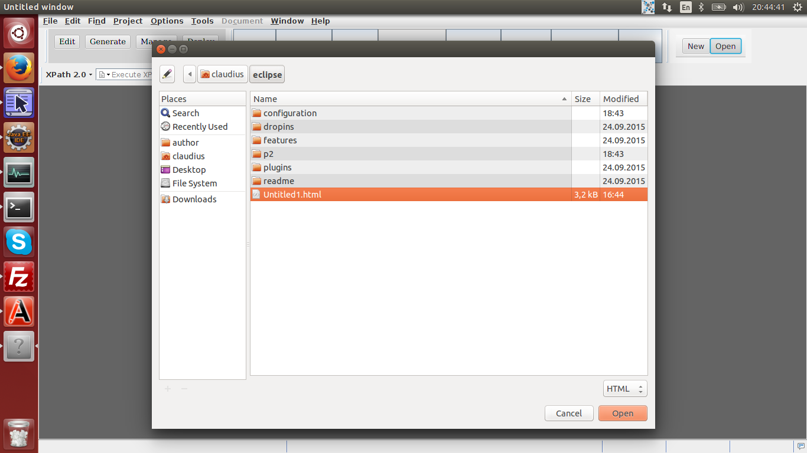

This Oxygen plugin is intended to provide some new functionality to Oxygen, like web browsing, rich text editing, etc.
UpThis feature allows browsing the internet. Just click on the menu item File / Open URL in WebView, and enter the URL in the dialog window, preceded by the protocol, e. g. "http://example.com".
One can open multiple tabs simultaneously.
Each opened tab has its own button for different operations: go back, go forward, save page as, refresh.
By clicking on the menu item Help / Help, the online help will be opened in a tab in Oxygen, so one can enjoy it here, instead of in an web browser.
UpThe plugin allows the user to edit rich text.
currently supports the opening, editing, and saving of the HTML files.
The text has to be saved by using the Save button located on the top of the current tab.
 UpAddress is https://raw.githubusercontent.com/claudius108/releases/master/oxygen-webview-plugin/addon.xml.
The source can be found at https://github.com/claudius108/oxygen-webview-plugin.git.
Up